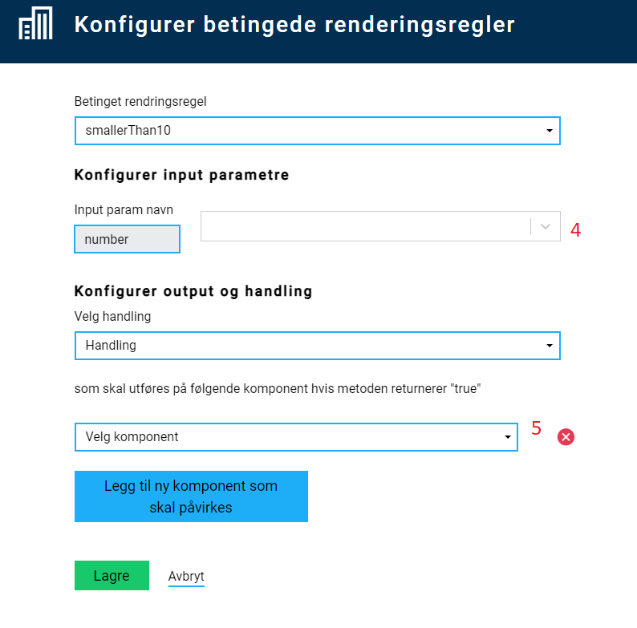

Dynamics
How to add dynamics?
⚠️ Dynamics are under active development. The RuleHandler.js file will in the future be replaced by
dynamic expressions. Currently only show/hide dynamics are supported using expressions, but
calculation and validation will be supported in the future.
Introduction
Dynamics are events that happen on the client side. These can be separated in two categories:
- Calculations - do calculations on the client side, and update the fields with new value.
- Show/hide fields - decide if fields should be hidden or displayed based on form values.
Rules used for javascript-based dynamics can be added and changed directly in the RuleHandler file containing the rules.
⚠️ Since we are moving more and more of this functionality over to dynamic expressions, the file
RuleHandler.js is not a part of new apps as of 7th October 2024.
If you do not find the file in the App/ui/form-folder, you can add it there. As a minimum, the file should contain the following:
var ruleHandlerObject = {};
var ruleHandlerHelper = {};
var conditionalRuleHandlerObject = {};
var conditionalRuleHandlerHelper = {};
There are two ways to add and change dynamics for an Altinn App:
- Directly in Altinn Studio, in the app repository. Select “Open repository” in the profile menu for the app, and navigate to
App/ui/formand openRuleHandler.jsin the browser. - In a local development environment by working in the file
RuleHandler.jswhich can be found in theApp/ui/formfolder.
All dynamics are written as JavaScript functions in the RuleHandler file. Functions that are defined in this file can be configured to run for selected fields in the app.
RuleHandler.js must be written in the version of ECMAScript that the given browser supports.
For IE11 this is ECMAScript 5.Add or edit functions for dynamics
There are two JavaScript objects in the file RuleHandler.js:
ruleHandlerObject- functions for calculationsconditionalRuleHandlerObject- functions for hiding/showing fields
It is in these objects the functions should be defined. In addition to these there are two helper objects (ruleHandlerHelper and conditionalRuleHandlerHelper), where you configure what input the different functions expect. This is done in order to be able to configure rules in Altinn Studio at a later point.
To be able to configure dynamics in Altinn Studio the functions must be defined in the JavaScript objects (ruleHandlerObject or conditionalRuleHandlerObject), and the parameters they expect in the corresponding helper object.
The structure of the helper object:
var ruleHandlerHelper = {
<name_of_rule>: () => {
return {
<input_param>: "<description>",
<input_param>: "<description>",
<input_param>: "<description>"
...
};
}
}
The structure of objects containing the JavaScript functions:
var ruleHandlerObject = {
<name_of_rule>: (<input_variable_name>) => {
// Do something here
// Values from input parameters defined in
// helper can be accessed through the object passed
// into the rule, f.ex.
// <input_variable_name>.<input_param>
}
}
For instance, to create a rule that calculates the sum of two numbers (calculation) the following code is needed:
var ruleHandlerHelper = {
sum: () => {
return {
field1: "Field 1 in sum",
field2: "Field 2 in sum",
};
},
};
var ruleHandlerObject = {
sum: (data) => {
// Check if data is available
if (!data) return;
// Check if value from input fields are available
// If not, use value 0 in sum
data.field1 = data.field1 ? data.field1 : 0;
data.field2 = data.field2 ? data.field2 : 0;
// return the sum
return data.field1 + data.field2;
},
};
Some default methods for calculations, with helper objects, are defined as part of the app template.
| Method name | Description | Parameters | Defined in object/helper |
|---|---|---|---|
sum |
Returns the sum of two values | value1, value2 |
ruleHandlerObject/ruleHandlerHelper |
fullName |
Combines two strings (first name and last name) separated with a space. | firstName, lastName |
ruleHandlerObject/ruleHandlerHelper |
lengthGreaterThan4 |
Returns true if the value is longer than 4 chars long. |
value |
conditionalRuleHandlerObject/conditionalRuleHandlerHelper |
Dynamics are run if a change has occurred in the input fields connected to the rule. The functions have to handle cases where, for instance, only one of the two parameters have defined values.
An example of how this could be done is shown in the sum-function below, where missing values are corrected to the value 0.
var ruleHandlerObject = {
sum: (obj) => {
obj.value1 = obj.value1 ? +obj.value1 : 0;
obj.value2 = obj.value2 ? +obj.value2 : 0;
return obj.value1 + obj.value2;
},
fullName: (obj) => {
return obj.firstName + " " + obj.lastName;
},
};
var ruleHandlerHelper = {
sum: () => {
return {
value1: "Value 1",
value2: "Value 2",
};
},
fullName: () => {
return {
firstName: "First name",
lastName: "Last name",
};
},
};
var conditionalRuleHandlerObject = {
lengthBiggerThan4: (obj) => {
if (obj.value == null) return false;
return obj.value.length >= 4;
},
};
var conditionalRuleHandlerHelper = {
lengthBiggerThan4: () => {
return {
value: "value",
};
},
};
Configure dynamics for UI components
- Add the relevant UI components to the layout.
- In the right menu, select Regler for beregninger or Regler for vis/skjul felt.

- Select the wanted rule. Or add a function, as described in the sections above.

- Configure which field(s) that should be used as input for the function - this is fields in the data model.

- Select which component(s) should be affected by the rule (receive value or be shown/hidden) - these are components in the layout.
- For rules for hiding/showing elements several fields can be selected for the same rule.
- Save the configuration.
- Test that the rules works as expected.
Existing configured rules is shown in the right menu, and can be edited/deleted.
The configuration can also be seen in the file App/ui/RuleConfiguration.json. This can be manually edited if necessary.
Example usage of dynamics on an app
Scenario:
An app with a UI has several fields for input. One of these fields is a radio button with the options “Yes” and “No”. Depending on what the user selects, different content is to be displayed:
- Yes: a new input field is shown, along with information about what should be entered.
- No: a different text with information is shown.
This can be solved by adding the following in RuleHandler.js, either through Rediger dynamikk in Altinn Studio, or by manually editing the source code.
var conditionalRuleHandlerObject = {
sjekkVirksomhetIDrift: (obj) => {
return obj.value && obj.value === "Yes";
},
sjekkVirksomhetIkkeIDrift: (obj) => {
return !obj.value || obj.value != "Yes";
},
};
var conditionalRuleHandlerHelper = {
sjekkVirksomhetIDrift: () => {
return {
value: "value",
};
},
sjekkVirksomhetIkkeIDrift: () => {
return {
value: "value",
};
},
};
Here, two functions have been added which checks if the value is “Yes” or not. After this code is added, the rules can be configured in studio. The results are displayed below:

Dynamics in repeating groups
It is also possible to add dynamics within a repeating group. This requires that the rule is configured in Altinn Studio as
usual, and then manually doing some extra configuration in the App/ui/RuleConfiguration.json file as described below.
- For each
inputParams,{0}need to be added after the group part of the data binding. For instancemodel.group{0}.field. The index indicator will be replaced by the index for each relevant field in the repeating group. - For each
selectedFields(the fields affected by the rule),{0}needs to be added after the field ID, for instancelayoutComponent{0} - A new property must also be added to the rule,
repeatingGroup. This object must contain the ID of the relevant group in the layout file.
Here is an example of a rule that is configured for a repeating group:
{
"data": {
"ruleConnection": {},
"conditionalRendering": {
"9f9f2a50-360b-11ea-b69a-8510e2e248b9": {
"selectedFunction": "lengthBiggerThan4",
"inputParams": {
"value": "model.group{0}.field"
},
"selectedAction": "Show",
"selectedFields": {
"first": "some-field{0}",
"second": "some-other-field{0}"
},
"repeatingGroup": {
"groupId": "the-group-id"
}
}
}
}
}
Nested repeating groups
It is also possible to add dynamics for nested repeating groups. The configuration resembles that of a repeating group, but a second parameter childGroupId is added in the repeatingGroupobject, as well as an extra index indicator.
Example:
{
"data": {
"ruleConnection": {},
"conditionalRendering": {
"hide-nested-group-field": {
"selectedFunction": "shouldHide",
"inputParams": {
"value": "someGroup{0}.nestedGroup{1}.someField"
},
"selectedAction": "Hide",
"selectedFields": {
"field": "the-component-id{0}{1}"
},
"repeatingGroup": {
"groupId": "mainGroup",
"childGroupId": "subGroup"
}
}
}
}
}
Example with more complex dynamics
Scenario: An app has two sets of radiobuttons (yes/no) and a checkbox.
- When the app is loaded, only the first set of radiobuttons is visible.
- If the user selects
Yes, the second set of radiobuttons is shown.- If the user selects
Yesin the second choice, the checkbox is shown. - If the user goes back to the first set of radiobuttons and selects
No, both the second set of radiobuttons and the checkbox are hidden.
- If the user selects
Alternative 1
This can be solved by configuring two different conditions for when the fields should be displayed:
- One condition for the second set of radiobuttons
- Is shown if
Yesis selected in the first set
- Is shown if
- One condition for the checkbox
- Is shown if
Yesis selected in both sets of radiobuttons.
- Is shown if
Example code that can solve this case:
var conditionalRuleHandlerObject = {
showField2: (obj) => {
if (obj && obj.field1 && obj.field1 === "yes") {
return true;
}
return false;
},
showField3: (obj) => {
if (
obj &&
obj.field1 &&
obj.field1 === "yes" &&
obj.field2 &&
obj.field2 === "yes"
) {
return true;
}
return false;
},
};
var conditionalRuleHandlerHelper = {
showField2: () => {
return {
field1: "Field 1",
};
},
showField3: () => {
return {
field1: "Field 1",
field2: "Field 2",
};
},
};
Alternative 2
This can also be configured by using the same condition to show both the second set of radiobuttons and the checkbox.
In addition, there needs to be a rule that removes the value from the second set of radiobuttons if the user selects No in the first set:
var ruleHandlerObject = {
clearField: (obj) => {
if (obj && obj.checkValue === "no") {
return "";
}
return obj.currentValue;
},
};
var ruleHandlerHelper = {
clearField: () => {
return {
checkValue: "check against this value",
currentValue: "the current value",
};
},
};
var conditionalRuleHandlerObject = {
showField: (obj) => {
if (obj && obj.checkField && obj.checkField === "yes") {
return true;
}
return false;
},
};
var conditionalRuleHandlerHelper = {
showField: () => {
return {
checkField: "check against this value",
};
},
};
Dynamics in PDF
From Nuget versions 3.0.0 it is also possible to add dynamics for the PDF. This is done in the PDF Handler.
The application must include the layout/ui/Settings.json file defined here."/altinn-studio/v8/reference/logic/ux/pages/navigation/
Configuring dynamics in PDF is similar to how validations are added on the server side.
In the example below, if the string some-value is part of a value in the data model, the component with the ID 079f205b-c9ea-414d-9983-0d158e833e8a is hidden. The ID is reflected in the layout files.
public async Task<LayoutSettings> FormatPdf(LayoutSettings layoutSettings, object data)
{
if (data is Skjema)
{
Skjema skjema = (Skjema)data;
if (skjema?.Innledninggrp9342?.Kontaktinformasjongrp9344?.KontaktpersonNavndatadef2?.value.Contains("some-value") == true)
{
layoutSettings.Components = new Components();
layoutSettings.Components.ExcludeFromPdf = new System.Collections.Generic.List<string>();
layoutSettings.Components.ExcludeFromPdf.Add("079f205b-c9ea-414d-9983-0d158e833e8a");
}
}
return await Task.FromResult(layoutSettings);
}
```